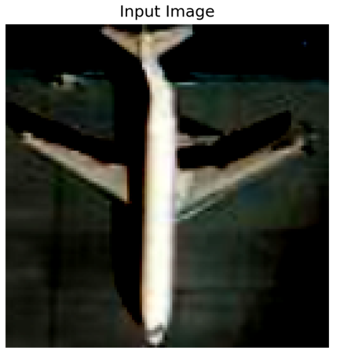
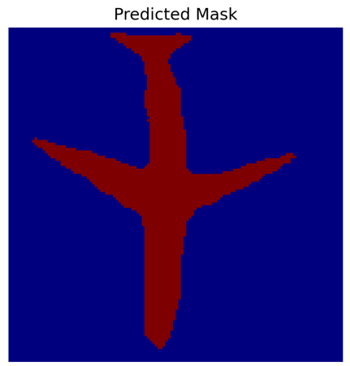
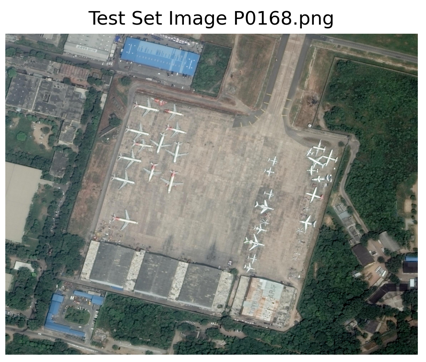
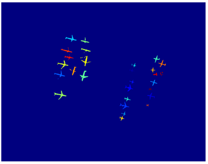

Plane Image Segmentation Model
Project Summary
Programming Language: Python
Libraries/Frameworks: cv2, matplotlib, Detectron2, torch, pandas, and numpyProject Description
This project involved designing, training, and evaluating advanced deep learning models for object detection, semantic segmentation, and instance segmentation on the iSAID dataset, a large-scale aerial image dataset focused on airplane detection. The primary goal was to detect, segment, and distinguish individual airplane instances in high-resolution satellite images through successive model improvements and comparative analysis across multiple computer vision architectures.Object Detection Model(Faster R-CNN with Detectron2)
The plane detection uses the (COCO-Detection/faster_rcnn_R_101_FPN_3x.yaml) model as a base which is further trained on the modified dataset to improve the accuracy of the detection. Obtained the bounding boxes for the predicted locations of the planes.Data preprocessing
- Train-Test Dataset Split
- Block Spliting - Ensures small planes remain visiable after scaleing the input image
Hyperparameters Optimization
- Max Iterations
- Images per batch
- Learning Rate
Image Reconstruction from Blocks
- Uses Non-Maximum Suppression to handle duplicate planes found in overlaping blocks
Model Evaluation
The evaluation for this model was done using a COCOEvaluator.Segmentaton Model
Created a 10-layer U-Net–style model with skip connections to preserve fine spatial features between encoder and decoder layers. Loss Function: Began with Binary Cross-Entropy Loss with logits, later enhanced with Dice Loss to better handle class imbalance. Computed mean Intersection-over-Union (mIoU) across all test samples for evaluation.Instance Segmentation
Combines the 2 models by using the bounding boxes obtained from the Object Detection model and croping the images to use as input for the segmentation model. After each instance of the planes in the image are segmented combines the segmentations into a single mask.Results
After Object Detection

Before

After Segmentation Model

Before

After Combined Segmentation
